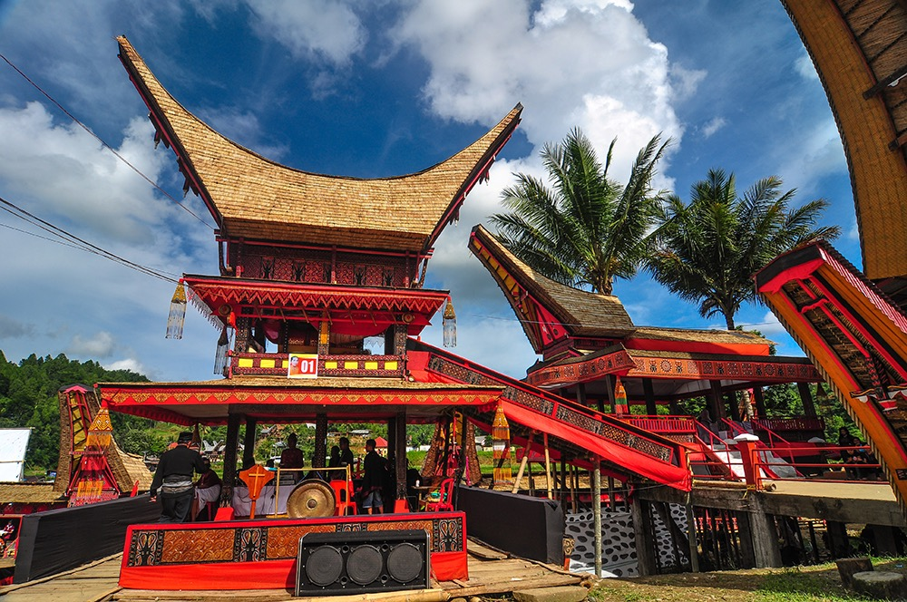

Objek Wisata
Tana Toraja, Tanah Eksotik di Pegunungan Sulawesi Selatan dengan alam dan budayanya yang memukau. Keindahan Toraja memang tak dapat dipungkiri atau dilalaikan begitu saja. Ada suatu tempat yang dinamakan negeri di atas awan sebab pesona alamnya yang menakjubkan. Ada pun wisata yang kental dengan budayanya. Toraja adalahkekayaan dengan tanah eksotik yang terdapat di pegunungan Sulawesi. Toraja ialah bukti bahwa Indonesia kaya akan Tradisi dan Budaya yang Beraneka ragam dan masih terjaga sampai hari ini.
Kete' kesu
Burake
Ollon
HOTEL
Restaurant

